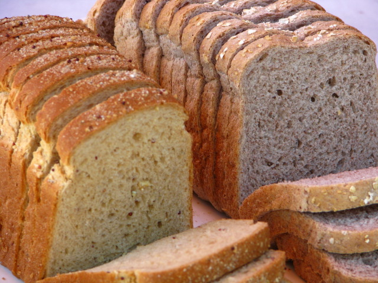
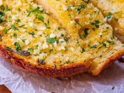
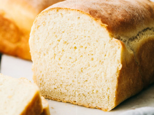
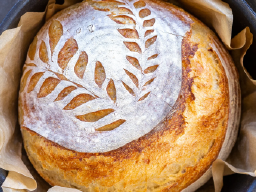
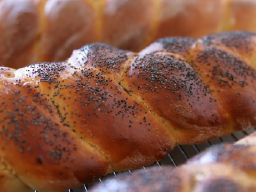
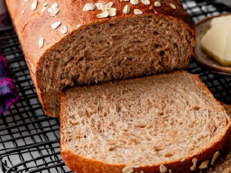
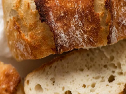
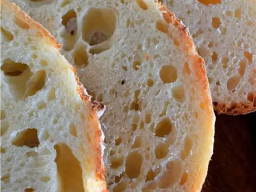
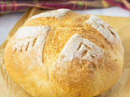
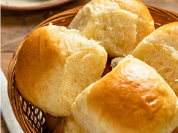

Search Results

How to make the best bread

How To Make Garlic Bread
This Garlic bread recipe can be made in only 30 minutes! It is easy to make and can be enjoyed by everyone!
www.howtomakebread.com

White Bread Recipes
White bread is tricky, but following these steps can help you create the best White Bread! It is simple and only takes a few hours.
www.easiestbreadever.com

How To Make Sourdough Bread
Sourdough is known for being an extremely hard thing to make. This recipe gives you details on how to make a sourdough starter and how to bake it!
www.homemadebreadmaker.com

Bread Twist Recipe
Bread twists are complicated by elegant. If you want to try leveling up your bread game, try this easy guide!
www.easybreadrecipes.com

Bread Recipes
There are various different kinds of breads out there. Discover and try your favorite recipe!

Step-By-Step Bread
An Easy step by step tutorial on how to create the best fluffy white bread in only a few steps!

Best Bread For Beginners
Here are some of the easiest and quickest types of bread to make as a beginner!

How To Decorate Your Bread
If you want to level up your breads appearance, here's a few tricks!

How To Make Rolls
The classic roll is beloved by all. It is easy to make and delicious for all ages. Here's a homemade recipe for how to make the best roles!
www.rollmakerforbeginners.com